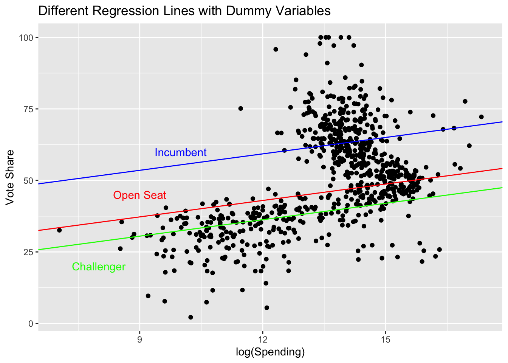
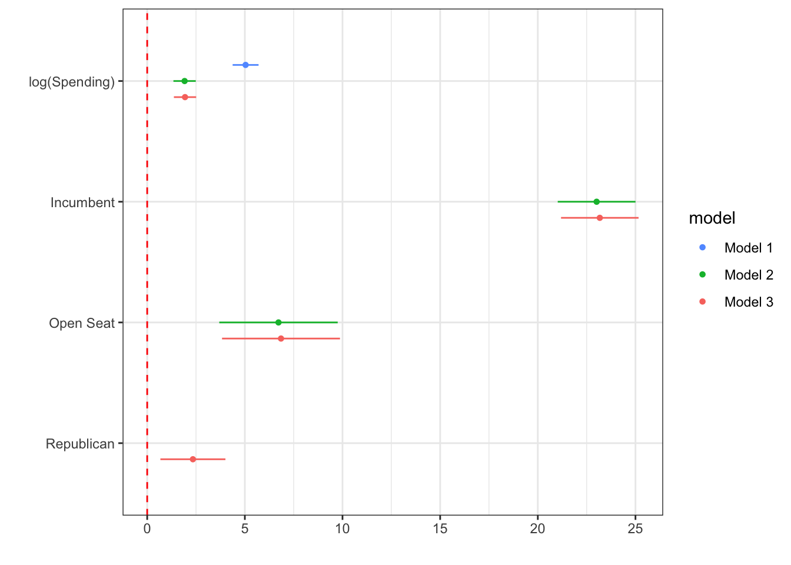
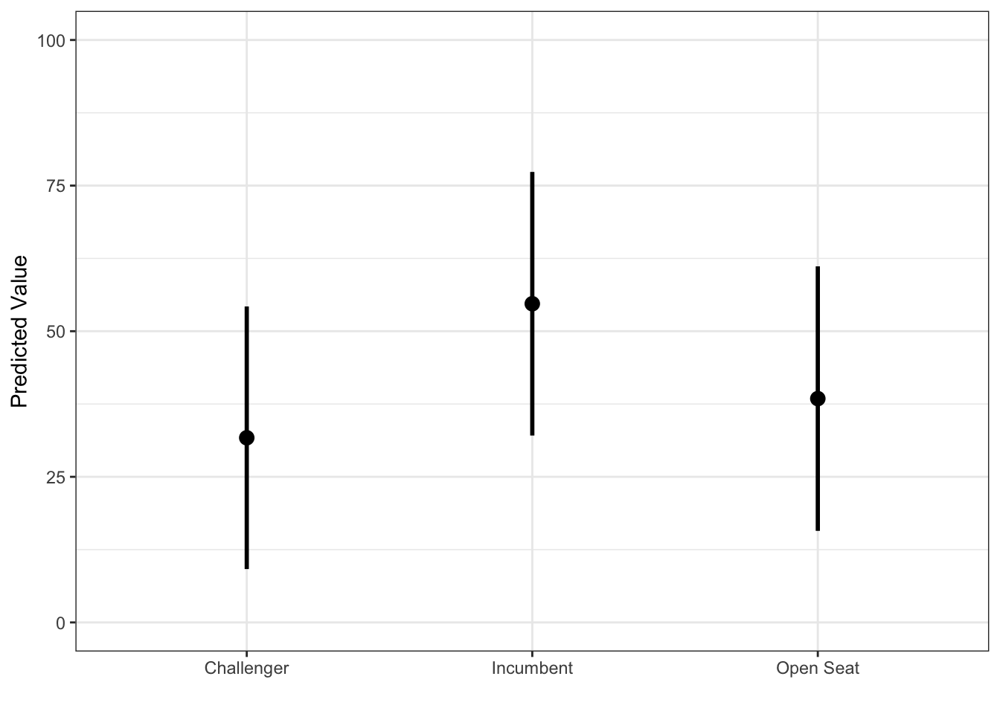

Section 9. Dummy Variables and Regression
Dummy Variables
We have previously talked about dummy, or indicator, variables which are binary (0,1) variables which take on a value of 1 if some condition is met and 0 otherwise. For example, we might have a variable called “democrat” which equals 1 if an individual in our dataset is a Democrat and 0 otherwise (i.e., if the individual is a Republican or Independent).
Earlier in the semester, we learned about factor variables in R, a way of encoding and storing categorical variables. In order to meaningfully use these factor variables in regression, we generally put them into the form of a series of dummy variables. For example, if we have a factor variable called “party” which describes the party identification of individuals in the dataset, we might transform it into a series of dummy variables: democrat, independent, republican.
R can do this automatically in the lm() function, but sometimes we want to do this manually as it gives us more control over the output.
Important Notes:
The output when changing factor variables into a series of dummy variables depends on the ordering of the factor levels. Remember that, by default, R orders factor variables alphabetically or numerically.
Regression cannot handle all categories of the factor variable as dummy variables, and it must exclude one level/category. By default, the excluded level is the first factor level.
fastDummies
We can do this using the fastDummies package in R.
install.packages("fastDummies")
library(fastDummies)The main function to be aware of in fastDummies is the dummy_columns() function. Here are the main arguments for this function:
dummy_columns(
# input the tibble/data.frame dataset
.data,
# input the columns you want to convert to a dummy variable
# this should be a character vector
select_columns = NULL,
# do you want to remove the first factor level?
# should be TRUE for regression
remove_first_dummy = FALSE,
# creates a dummy variable for missing values if FALSE
ignore_na = FALSE,
#remove columns you're making the dummy variables from if TRUE
remove_selected_columns = FALSE
)Example
library(tidyverse)
house <- read_csv("house2020_elections.csv")house %>%
dummy_columns(
select_columns = c("party", "state",
"incumbent_challenge_full"),
remove_first_dummy = TRUE,
ignore_na = FALSE,
remove_selected_columns = TRUE
)# A tibble: 726 × 58
district receipts disbursements last voteshare party_REP state_AL state_AR
<dbl> <dbl> <dbl> <chr> <dbl> <int> <int> <int>
1 1 2344517. 2232544. CARL 64.4 1 1 0
2 1 80095. 78973. AVERHA… 35.5 0 1 0
3 2 57723. 57661. HARVEY… 34.7 0 1 0
4 5 669026. 223707. BROOKS 95.8 1 1 0
5 7 2171040. 1498832. SEWELL 97.2 0 1 0
6 1 966801. 1095518. CRAWFO… 100 1 0 1
7 7 1830741. 1126436. BERA 56.6 0 0 0
8 3 397099. 384584. HAMILT… 45.3 1 0 0
9 4 3022017. 3018529. KENNEDY 44.1 0 0 0
10 6 45504. 45286. BISH 26.7 1 0 0
# ℹ 716 more rows
# ℹ 50 more variables: state_AZ <int>, state_CA <int>, state_CO <int>,
# state_CT <int>, state_DC <int>, state_DE <int>, state_FL <int>,
# state_GA <int>, state_HI <int>, state_IA <int>, state_ID <int>,
# state_IL <int>, state_IN <int>, state_KS <int>, state_KY <int>,
# state_LA <int>, state_MA <int>, state_MD <int>, state_ME <int>,
# state_MI <int>, state_MN <int>, state_MO <int>, state_MS <int>, …Let’s start with a simple regression of voteshare on incumbent_challenge_full and log(disbursements).
mod <- lm(voteshare~log(disbursements) + `incumbent_challenge_full_Incumbent` + `incumbent_challenge_full_Open seat`,
data =
house %>%
dummy_columns(select_columns = c("incumbent_challenge_full"),
remove_first_dummy = TRUE,
ignore_na = FALSE))
summary(mod)
Call:
lm(formula = voteshare ~ log(disbursements) + incumbent_challenge_full_Incumbent +
`incumbent_challenge_full_Open seat`, data = house %>% dummy_columns(select_columns = c("incumbent_challenge_full"),
remove_first_dummy = TRUE, ignore_na = FALSE))
Residuals:
Min 1Q Median 3Q Max
-41.400 -6.307 0.487 5.538 47.319
Coefficients:
Estimate Std. Error t value Pr(>|t|)
(Intercept) 13.2845 3.7549 3.538 0.000429 ***
log(disbursements) 1.9156 0.2915 6.572 9.51e-11 ***
incumbent_challenge_full_Incumbent 23.0113 1.0141 22.691 < 2e-16 ***
`incumbent_challenge_full_Open seat` 6.7225 1.5444 4.353 1.54e-05 ***
---
Signif. codes: 0 '***' 0.001 '**' 0.01 '*' 0.05 '.' 0.1 ' ' 1
Residual standard error: 11.43 on 722 degrees of freedom
Multiple R-squared: 0.5586, Adjusted R-squared: 0.5568
F-statistic: 304.6 on 3 and 722 DF, p-value: < 2.2e-16Interpreting Dummy Variable Coefficient Estimates
The coefficient estimate for a dummy variable can be interpreted as the difference in the conditional expected value between the omitted category and the dummy variable. In other words, the inclusion of the dummy variables gives us a different intercept for each category in the factor variable.
The actual intercept estimate for the regression is the conditional expectation for the omitted category/categories.
In the example above,

Summarizing Regression Models
Last time, we discussed using tables to summarize the output of regression models. Often, we want to visually display the results using a plot. We can do this using a variety of packages, including dotwhisker and modelsummary. Today, we will focus on dotwhisker.
These types of plots are popular because they can convey a lot of information in a relatively compact and visually appealing way.
install.packages("dotwhisker")
library(dotwhisker)
library(tidyverse)
house <- read_csv("house2020_elections.csv")mod1 <- lm(voteshare~log(disbursements), data = house)
mod2 <- lm(voteshare~log(disbursements) +
incumbent_challenge_full_Incumbent +
`incumbent_challenge_full_Open seat`,
data = house %>%
dummy_columns(select_columns = c("incumbent_challenge_full"),
remove_first_dummy = TRUE))
mod3 <- lm(voteshare~log(disbursements) +
incumbent_challenge_full_Incumbent +
`incumbent_challenge_full_Open seat` +
party_REP,
data = house %>%
dummy_columns(select_columns =
c("incumbent_challenge_full", "party"),
remove_first_dummy = TRUE))
dwplot(list(mod1, mod2, mod3),
show_intercept = FALSE,
ci = 0.95,
vline = geom_vline(
xintercept = 0,
colour = "red",
linetype = "dashed"
),
vars_order = c("log(disbursements)",
"incumbent_challenge_full_Incumbent",
"incumbent_challenge_full_Open seat",
"party_REP"),
model_order = c("Model 1", "Model 2", "Model 3")
) %>%
relabel_predictors(
c(
`log(disbursements)` = "log(Spending)",
incumbent_challenge_full_Incumbent = "Incumbent",
`incumbent_challenge_full_Open seat` = "Open Seat",
party_REP = "Republican"
)
)+
theme_bw()
Making Predictions with Regression Models
We can make predictions for new data points using our regression models using the predict() function in base R. To make these predictions, we need to have a new dataset in the same form as our old dataset with the same variables:
mod <- lm(voteshare~log(disbursements) +
incumbent_challenge_full_Incumbent +
`incumbent_challenge_full_Open seat`,
data = house %>%
dummy_columns(select_columns =
c("incumbent_challenge_full"),
remove_first_dummy = TRUE))
tibble(disbursements = rep(15000, 3),
incumbent_challenge_full_Incumbent = c(1, 0, 0),
`incumbent_challenge_full_Open seat` = c(0, 1, 0)) %>%
predict(mod, . , interval = "prediction") %>%
as_tibble() %>%
mutate(incumbency_status =
c("Incumbent", "Open Seat", "Challenger")) %>%
ggplot(aes(incumbency_status, fit)) +
geom_point(size = 3) +
geom_segment(aes(x = incumbency_status,
xend = incumbency_status,
y = lwr, yend = upr),
lwd = 1) +
labs(y = "Predicted Value", x = "") +
theme_bw() +
ylim(c(0, 100))